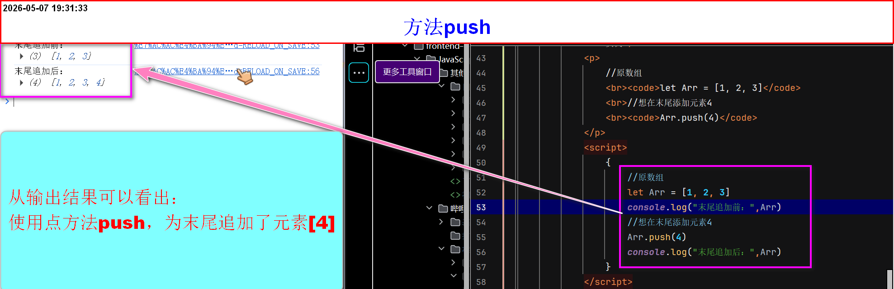
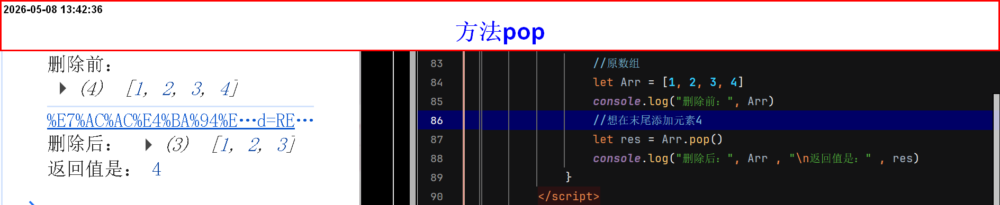
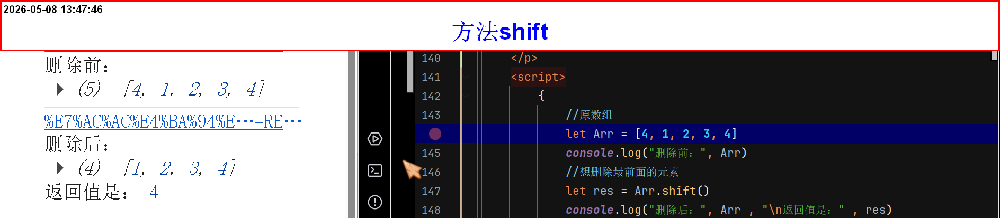
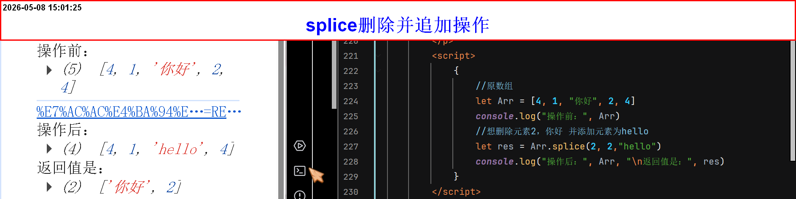
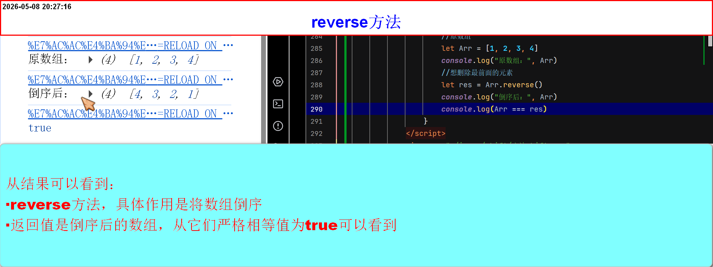
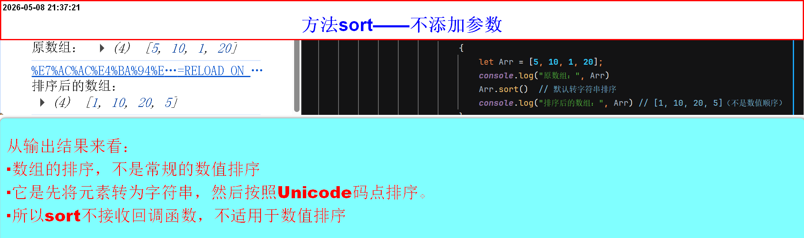
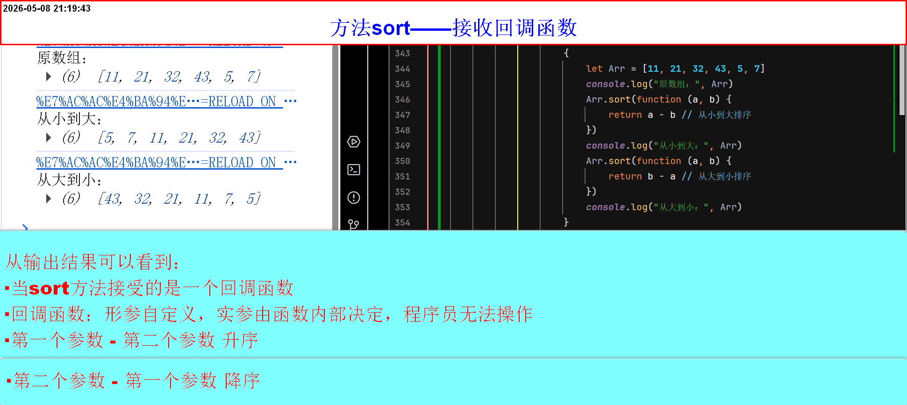

数组常用方法(原数组会受影响)
数组为什么需要方法
- 数组是复杂数据类型，不能通过直接赋值来修改内容（会改变引用地址），必须使用数组方法在原有数组上进行操作。
-
比如想改变一个数组
// 创建一个数组
var arr = [1, 2, 3]
我们想把数组变成只有1和2两个元素arr = [1, 2] - 以上这个操作对吗？显然不对，地址不同，不是一个数组，而是重新创建了一个数组
- 我们要求的是，在当前数组做更改
- 所以，常规手段没有办法，这就需要借助(方法了)
数组常用方法(原数组会受到影响)
-
数组常用方法(原数组会受到影响):
push、pop、unshift,shift、splice,reverse,sort-
方法[
push]- 方法(
push):是用来在数组的末尾追加一个元素 - 语法：
字面量.push()()内填需要追加元素 - 返回值是数组追加后的长度
-
实例
//原数组
let Arr = [1, 2, 3]
//想在末尾添加元素4let res = Arr.push(4)// 用 声明变量,接收返回值
- 方法(
-
方法[
pop]- 方法(
pop):是用来删除数组最后的元素 - 语法：
字面量.pop()()为空括号 - 返回值是删除的元素
-
实例
//原数组
let Arr = [1, 2, 3, 4]
//想删除末尾最后一个元素let res = Arr.pop()// 用 声明变量,接收返回值
- 方法(
-
方法[
unshift]- 方法(
unshift):是用来在数组最前面追加元素 - 语法：
字面量.unshift()()内填需要添加的元素 - 返回值是追加后的数组长度
-
实例
//原数组
let Arr = [1, 2, 3, 4]
//想在数组最前面追加元素4let res = Arr.unshift(4)// 用 声明变量,接收返回值
- 方法(
-
方法[
shift]- 方法(
shift):是用来删除数组最前面的元素 - 语法：
字面量.shift()()为空括号 - 返回值是删除的元素
-
实例
//原数组
let Arr = [4, 1, 2, 3, 4]
//想删除最前面的元素let res = Arr.shift()// 用 声明变量,接收返回值
- 方法(
-
方法[
splice]- 方法(
splice):是用来追加或删除数组内任意位置元素(首、尾、中间均可) - 语法(删除操作)：
字面量.splice(开头索引,需要操作数)
只有两个参数，执行删除操作(可以同时删除多个元素),需要注意操作数指的是：需要删除的元素个数不是需要删除的最后一个元素索引 -
语法(删除操作后再追加操作)：
字面量.splice(开头索引,需要操作数,需要添加的元素)
当出现第三个或多个参数，从第三个参数开始，后面均是追加元素操作(可以同时追加多个元素，元素之间【英文逗号隔开】) - 语法(只追加操作)：
字面量.splice(开头索引,0,需要添加的元素)
当操作数为0不会执行删除操作，后续同样是：追加元素操作(可以同时追加多个元素，元素之间[英文逗号隔开]) 需要注意：当删除数量为 0 时，后续元素就直接插入到该索引之前，原有元素向后移动。，具体多少，由程序员自己决定 - 返回值是所删除的元素，组成的数组,若没有执行删除操作，则返回值是空数组
-
注意：
- 开头索引：顾名思义：就是需要执行操作的第一个元素索引
- 需要操作数：不是需要执行操作最后一个元素的索引, 是需要执行操作的元素个数
- 当第二个参数(操作数)为[0]的时候，不会执行删除操作
- 字符串需要双引号包裹
- 追加的元素数据类型，可以是任意数据类型
- 当追加数量大于删除数量，不会报错，而是数组长度会相应增加，无需严格把控追加数量
-
实例1(执行删除操作)
//原数组
let Arr = [4, 1, 3, 2, 4]
//想删除元素2，3let res = Arr.splice(2,2)// 用 声明变量,接收返回值 注意是：索引(下标)
-
案例2(删除操作后再追加操作)
//原数组
let Arr = [4, 1, "你好", 2, 4]
//想删除元素2，你好 并添加元素为hellolet res = Arr.splice(2,2,"hello")// 用 声明变量,接收返回值 注意是：索引(下标)
-
案例3(只执行追加操作)
//原数组
let Arr = ["goldenFlower","岁"]
// 在元素【goldenFlower】前添加元素：你好，我叫 在元素【岁】前添加18let res = Arr.splice(0, 0, "你好","我叫")let res2 = Arr.splice(3, 0, "18")// 用 声明变量,接收返回值 注意是：索引(下标)
- 方法(
-
方法[
reverse]- 方法(
reverse):是用来将数组元素，采用倒序的方式排列 - 语法：
字面量.reverse()()为空括号 - 返回值是原数组倒序后的数组，因为会更改原数组，所以一般不需要额外声明变量接收返回值
-
实例
//原数组
let Arr = [1, 2, 3, 4]
//想将数组元素倒序Arr.reverse()// 用 一般不需要额外声明变量接收返回值
- 方法(
-
方法[
sort]- 方法(
sort):是用来sort 方法可以用来对数组元素进行排序。
1.如果不传参数，默认按字符串的 Unicode 码点排序（不适合数值排序）。
2.如果希望按数值大小排序。必须传递一个比较函数（回调函数） - 语法：
字面量.sort() - 返回值是原数组排序后的数组，因为会更改原数组，所以一般不需要额外声明变量接收返回值
-
分两种情况
- 当括号为空，就是直接使用方法，不加参数
(sort() 不加参数时：sort() 会将数组元素转为字符串， 然后按 Unicode 码点（字典序）排序，不适合对数字进行数值排序。)
比如：
let Arr = [5, 10, 1, 20];
Arr.sort() //不加参数
最后的结果仍然是：[11,21,32,43,5,7]
-
当sort方法接受的是一个回调函数，[会是整个元素从大到小，或从小到大排序]
- 形参固定两个
- 形参命名自定义
- 具体操作流程：从数组挑两个元素，进行比较(直到所有元素比较结束)
第一个参数 - 第二个参数升序(从小到大)第二个参数 - 第一个参数降序(从大到小)
比如：
let Arr = [11, 21, 32, 43, 5, 7]
Arr.sort(function(a,b){
return a-b; // 从小到大排序
})
Arr.sort(function(a,b){
return b-a; // 从大到小排序
})
- 当括号为空，就是直接使用方法，不加参数
- 方法(
-
补充知识
-
回调函数
- 形参命名自定义
- 形参上限由方法决定
- 实参由函数内部决定，编码者无权干涉
- 可以使用return，输出返回值
- 但是有些方法，会忽略返回值(forEach),返回值始终是undefined
-
普通函数
- 形参命名自定义
- 实参可以调用函数，传参
- 可以使用return，输出返回值
- 单独使用return，返回值是undefined